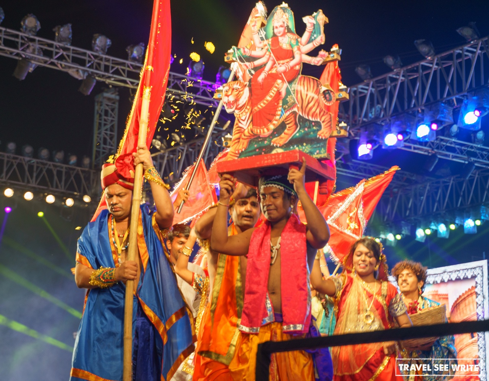
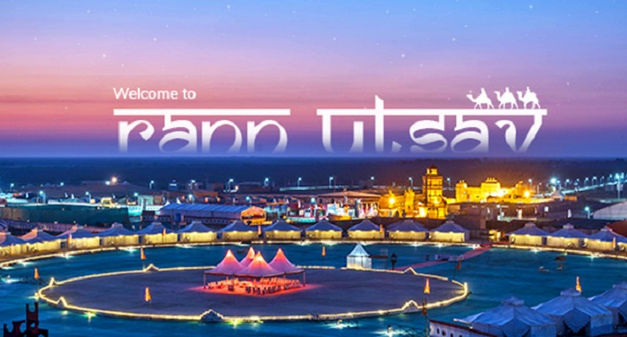

Navaratri
Navaratri in Gujarat is celebrated with great enthusiasm, featuring traditional dances, vibrant attire, and devotional rituals. The festival lasts for nine nights and is dedicated to the worship of the Hindu goddess Shakti. The celebration commences with the bringing of the auspicious garbo (kalash) home and is marked by music, dance, and worship for 10 days
During Navaratri, the Gujarati community engages in the traditional folk dance called Garba, performed in circles around a centrally lit lamp or an image of the goddess Shakti. Both men and women wear colorful and traditional attire. Women typically wear Chaniya choli, a three-piece dress with an embroidered blouse, flared skirt, and a dupatta, while men wear Kafni pyjamas with a short round kurta and a pagadi on the head

Raan Utsav
Rann Utsav is a festival celebrated in the Kutch region of Gujarat, India. It is a carnival of music, dance, and nature's beauty at the White Rann, offering a unique experience of tent city luxury and various activities. The festival runs for approximately 3-4 months from November to February, with the official dates for 2023-2024 being from 10th Nov 2023 to 25th Feb 2024. Visitors can enjoy activities such as golf cart and ATV rides, camel cart excursions, paramotoring, meditation, yoga, and experiencing Gujarati culture. The festival celebrates the marvels of nature at the White Desert and the rich cultural and artistic heritage of Kutch. The concept of Rann Utsav was envisioned by Hon'ble Prime Minister Shri Narendra Modi, the then Chief Minister of Gujarat. The festival attracts a large number of visitors and is considered one of the most eagerly-awaited tourism events in India. There are several websites available for Rann Utsav bookings, including rannutsav.com, gujarattourism.com, rannutsavgujarat.in, and rannutsav.
